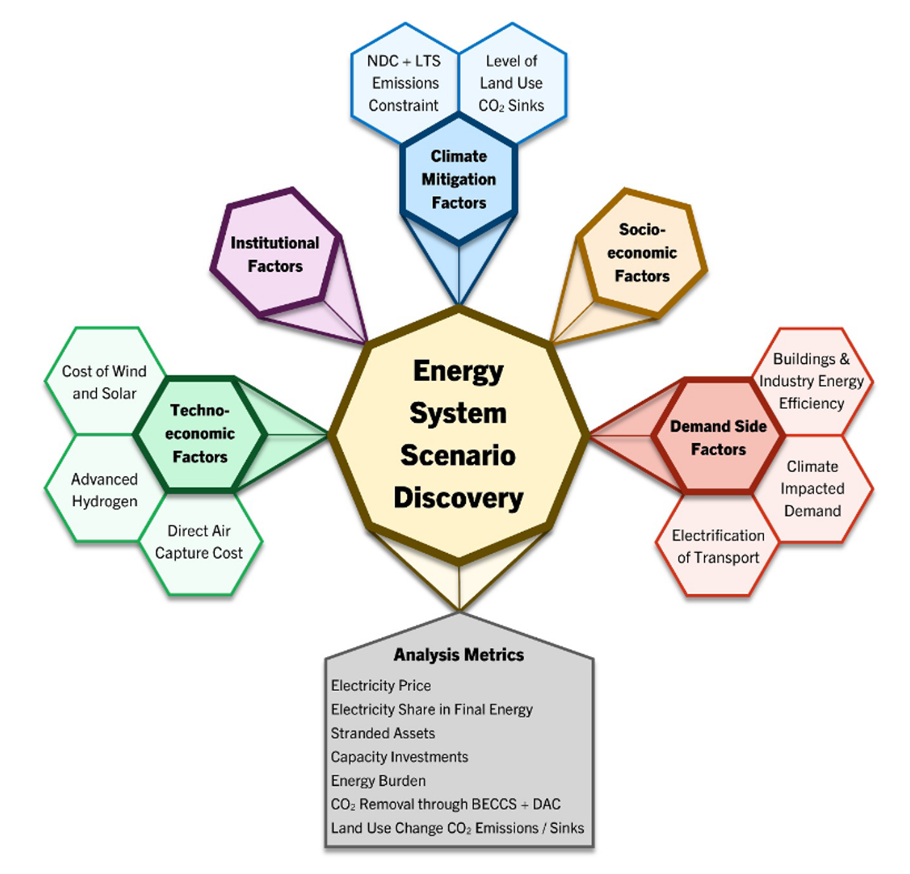

As the global society grapples with the urgent need to transition to a low-carbon energy future, a new study with an international team of researchers sheds light on the critical factors shaping this transformation.
Published in the journal Earth’s Future, the study leverages cutting-edge large-ensemble modeling to explore global energy transitions under the framework of national emissions pledges, offering valuable insights for policymakers.

The study, titled “Large Ensemble Exploration of Global Energy Transitions Under National Emissions Pledges,” employs the Global Change Analysis Model (GCAM) to simulate 5,760 possible future scenarios. This approach marks a significant departure from traditional research, which often relies on a handful of representative scenarios. Instead, the research team systematically varied 11 critical factors, including socioeconomic trends, technology costs, and institutional risks, to capture the deep uncertainties associated with global energy transitions.
The study reveals that the economic burden of decarbonization is not evenly distributed. Larger economies and developing regions face more severe outcomes, with significant variability in electricity costs and stranded assets. Carbon dioxide removal (CDR) options such as bioenergy with carbon capture and storage (BECCS) and direct air capture (DAC) play a pivotal role in balancing emissions, but their deployment and effectiveness vary widely across regions. Institutional quality and regional economic conditions significantly influence the cost and feasibility of clean energy investments, underscoring the importance of targeted policy interventions.
“This study demonstrates the key impact that uncertainties in policy, technology, and economics can have on global energy transitions,” said Prof. Haewon McJeon from the KAIST Graduate School of Green Growth and Sustainability, who coauthored the study. “Its findings offer essential guidance for crafting adaptive and equitable strategies to achieve decarbonization at both regional and global scales.”
The findings highlight the importance of adaptive policy planning and international cooperation to manage regional disparities. By identifying key drivers of uncertainty, the study equips decision-makers with the tools to design resilient strategies that align with the goals of the Paris Agreement.
As countries refine their nationally determined contributions and long-term strategies ahead of key international climate milestones, this study offers a timely framework for addressing the challenges of energy transition. It also highlights the importance of integrating socioeconomic equity and regional considerations into global climate strategies.
Read the paper here: https://doi.org/10.1029/2024EF004754
전 세계가 저탄소 에너지 미래로의 전환을 촉진하려고 하는 가운데 KAIST와 Tufts University, Pacific Northwest National Laboratory, University of Maryland, Peking University로 구성된 국제 연구팀이 이러한 전환을 형성하는 주요 요인들을 조명하는 새로운 연구를 발표하였다. 이 연구는 국제학술지 Earth’s Future에 게재되었으며, 대규모 앙상블 모델링을 활용하여 국가별 배출 공약의 틀 안에서 글로벌 에너지 전환을 탐구하며 통찰을 제공한다.
“Large Ensemble Exploration of Global Energy Transitions Under National Emissions Pledges”라는 제목의 이 연구는 Global Change Analysis Model (GCAM)을 사용하여 5,760가지의 가능한 미래 시나리오를 시뮬레이션하였다. 이 접근법은 종종 소수의 대표적인 시나리오에 의존하는 전통적인 모델링에서 벗어나 사회경제적 동향, 기술 비용, 제도적 위험 등 11개의 주요 요인을 체계적으로 다양화하여 글로벌 에너지 전환과 관련된 심층적인 불확실성을 포착한다.
이 연구의 결과는 탈탄소화의 경제적 부담이 고르게 분배되지 않는다는 것을 보여준다. 바이오에너지 탄소 포집 및 저장(BECCS) 및 직접 공기 포집(DAC)과 같은 이산화탄소 제거(CDR) 옵션은 배출 균형을 맞추는 데 중요한 역할을 하지만, 그 배치 및 효과는 지역에 따라 크게 다르게 나타난다. 제도적 여건과 지역 경제 상황은 청정 에너지 투자 비용 및 실행 가능성에 크게 영향을 미치며, 목표 지향적인 정책 개입의 중요성을 강조한다.
카이스트 녹색성장지속가능대학원의 전해원 교수는 “본 연구 결과를 통해 정책, 기술 및 경제적 불확실성이 글로벌 에너지 전환에 미치는 중요한 영향을 보여준다”라고 말하며, “글로벌 차원에서 탈탄소화를 달성하기 위한 적응적이고 공정한 전략을 수립하는 데 도움이되는 지침을 제공한다” 라고 설명하였다.
연구 결과는 지역 격차를 관리하기 위한 적응 정책 계획과 국제 협력의 중요성을 강조하며, 연구팀은 주요 불확실성 요인을 식별함으로써 정책 결정자들이 파리 협정 목표와 일치하는 회복력 있는 전략을 설계할 수 있는 도구를 제공한다. 각국이 주요 국제 기후 마일스톤을 앞두고 국가결정기여(NDC) 및 장기전략(LTS)을 구체화하는 과정에서 이 연구는 에너지 전환의 과제를 해결하기 위한 시기적절한 틀을 제공하며, 사회경제적 형평성과 지역적 고려사항을 글로벌 기후 전략에 통합하는 중요성을 강조한다.